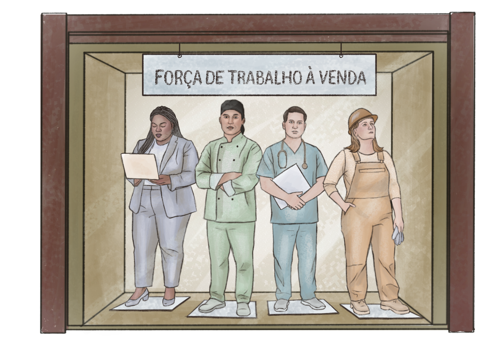

Processo de trabalho capitalista e de trabalho transitório
De modo geral, o processo de trabalho corresponde à organização social vigente em um dado momento histórico. Isso significa que a cada totalidade estrutural, seja ela econômica, política ou ideológica, há um tipo específico de trabalho: comum, servil, escravo, assalariado etc. Como força produtiva, o trabalho impulsiona a criação de bens que satisfazem necessidades humanas, mas sempre se manifesta sob uma forma histórica determinada.
Como vimos no capítulo 1, o modo de produção capitalista contém uma contradição fundamental: de um lado, socializa amplamente a produção com o advento da grande indústria e da cooperação ; de outro, exige que tal produção seja apropriada sempre privadamente pela classe detentora dos meios de produção. Essa contradição se legitima por meio de uma forma jurídica específica – o direito burguês – e de um sistema ideológico que fixa limites na maneira como os indivíduos enxergam a sociedade. O trabalho capitalista manifesta essa contradição por meio de dois aspectos básicos.
Em primeiro lugar, o direito burguês estabelece o assalariamento como regra geral do processo de produção de bens (mercadorias) e como forma da apropriação privada. O trabalho é, antes de tudo, um item vendido livremente no mercado; porém, nesse caso, o vendedor é o próprio trabalhador, despojado da propriedade de qualquer outra mercadoria a não ser a sua própria força de trabalho.
Como essa é a única mercadoria capaz de produzir mais valor, ela é adquirida pela classe capitalista, que usufrui dela por um tempo específico (a jornada de trabalho), e assim obtém um resultado que por ele é apropriado. Não se pode falar em um “trabalho em geral”, mas em um tipo específico de trabalho que fundamenta a exploração e, agora, aparece como força de trabalho. Para sintetizar o conceito de força de trabalho, recomendamos o vídeo “Trabalho ou força de trabalho” do professor Vitor Henrique Paro.

Título: Mercantilização da atividade laboral
Fonte: Prosa (2025a).
O segundo aspecto que manifesta a contradição fundamental do capitalismo ocorre em unidade dialética com o anterior. A produção capitalista é, como dissemos, socialmente generalizada e amplificada a partir da grande indústria.
O trabalho humano, coletivo e cooperado, passa a ser dotado de uma base material capaz de aumentar exponencialmente a capacidade produtiva e criar uma diversidade imensa de novas utilidades (valores de uso) que satisfazem necessidades humanas. Esse processo gera novas profissões no mercado de trabalho, assim como demandas por instrução que não existiam antes. Há, concretamente, uma imensa gama de novas especialidades, responsáveis pela produção de novos usos para os frutos do trabalho. O infográfico a seguir sintetiza a dialética do trabalho no modo de produção capitalista.

Título: Trabalho como Força de Trabalho
Fonte: Prosa (2025b).
Nesse cenário, vislumbra-se que o polo do trabalho produtor de bens para a solução dos grandes problemas coletivos possa dominar o polo da exploração. Falaríamos, assim, em um trabalho socialmente útil (Pistrak, 2018), que passaria a desenvolver-se sobre outro tipo de totalidade estrutural.
O capitalismo fornece as condições para que isso ocorra, mas tal situação só se concretiza em outra realidade histórica – que aponta para o fim do assalariamento. Para isso, teríamos que admitir um processo social transitório, que acirra a contradição exposta anteriormente e inverte a relação de dominância vigente. Novamente, falamos em travessia, em construção de novas condições, tanto do ponto de vista social (da organização da sociedade e da relação de poder entre as classes) quanto do aspecto técnico relativo à base produtiva.
.png)
Título: Uma nova realidade histórica
Fonte: Dolby (2015) e Norman (2011).
Elaboração: Prosa (2025c).
Tal transição exige que as relações sociais superem a aleatoriedade e unilateralidade do mercado capitalista. Há que se conceber um processo econômico planificado, ou seja, planejado pelo Estado e pelo novo arranjo de poder a ele correspondente. O Estado não apenas induz os aspectos mais importantes do desenvolvimento econômico, como também regula as grandes funções laborais estratégicas, garantindo que a satisfação de necessidades não fique à mercê dos interesses privados.
Tanto no cenário transitório quanto no contexto puramente capitalista, o processo de trabalho tem um duplo caráter. É profissional, no sentido da especialização e do assalariamento – que garantem a inserção do indivíduo trabalhador no sistema de relações vigentes, isto é, efetiva sua condição de cidadão –, mas também é político, já que cumpre um papel histórico de reprodução ou de superação das estruturas vigentes. No contexto da transição, em que se desenvolve a perspectiva politécnica de educação, os trabalhadores adquirem consciência política e protagonismo no planejamento do desenvolvimento social.